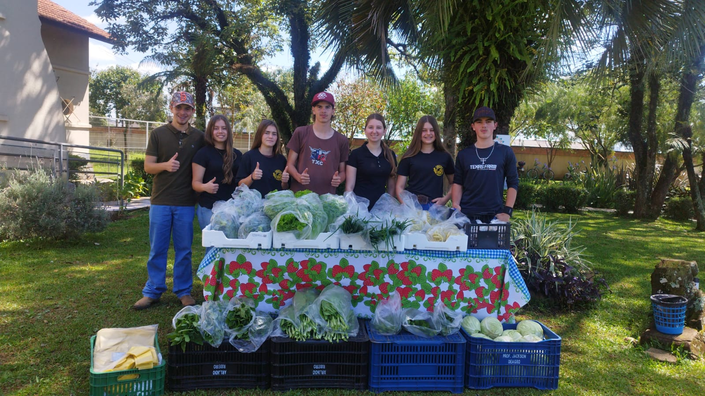

A Cooperar - Cooperativa Escolar Arlindo Ribeiro é uma cooperativa escolar ativa em Guarapuava (PR), vinculada ao ambiente de educação profissional técnica (CEEPAR - Centro Estadual de Educação Profissional Arlindo Ribeiro).
Os 7 Princípios do Cooperativismo
Valores e práticas que orientam a gestão democrática e o trabalho coletivo na escola e no campo.

Integração com a Eletiva CooperaCampo
A partir de agosto de 2026, a cooperativa começou uma integração com a eletiva de cooperativismo, reunindo alunos de 1° e 2° anos, integrando a aprendizagem do curso técnico em agropecuária com a cooperativa escola.
Durante a eletiva, os alunos puderam aprender a criar planilhas compartilhadas com dados reais da cooperativa, auxiliando na tabulação desses dados. Além disso, participaram de momentos de conversa com os membros da cooperativa para entender o que é a Cooperar, seu funcionamento, seus objetivos dentro da instituição. Os alunos se tornaram cooperados e assim podem participar das reuniões do conselho.
Surgiram, durante a eletiva, projetos que vêm sendo desenvolvidos pelos estudantes. O primeiro foi o projeto Aluno na Feira da Cooperar. Os alunos ajudam desde a colheita dos produtos que serão vendidos na feira, até a venda efetiva dos produtos.
Além disso, eles desenvolveram uma planilha de entrada e saída de produtos para auxiliar a Cooperar no controle de lucro nas feiras semanais, deixando o processo mais rápido e automatizado.
Os alunos também desenvolveram o projeto da estufa de morangos. Como o colégio não produz essa cultura, os alunos resolveram fazer a estufa e implementar esse cultivo aos cuidados da eletiva CooperaCampo. Esse projeto deverá ser continuado no próximo ano.

📸 Alunos participando da feira semanal da Cooperar
Abaixo estão alguns registros das atividades desenvolvidas na eletiva juntamente com a cooperativa.
🌾 Espaço do Cooperado e Comunidade Escolar
Deixe uma sugestão de novo cultivo, ideia para a feira semanal ou feedback sobre a eletiva CooperaCampo.
Projeto Estufa de Morangos
Equipe Eletiva CooperaCampo • Destaque
Cultivo em implantação pelos alunos do 1º e 2º ano para ampliar os produtos da feira semanal!